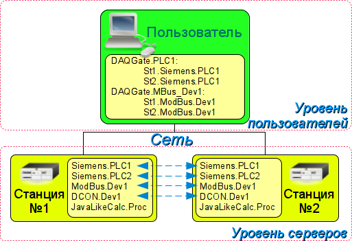
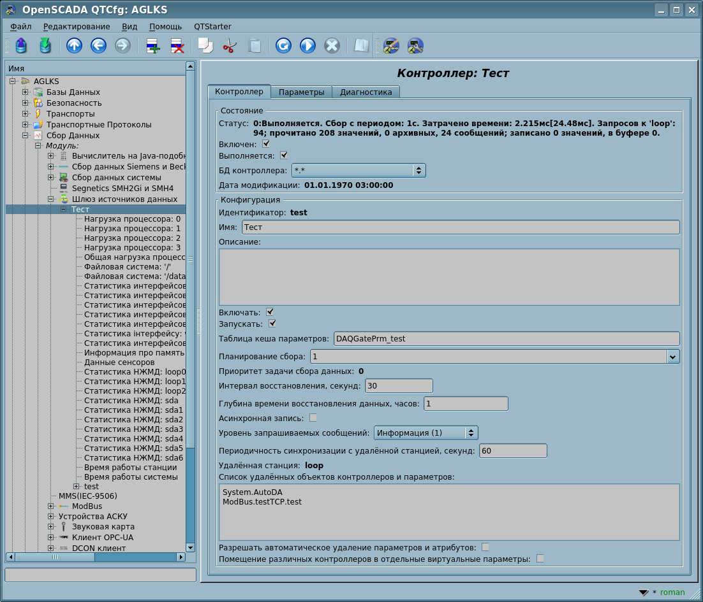
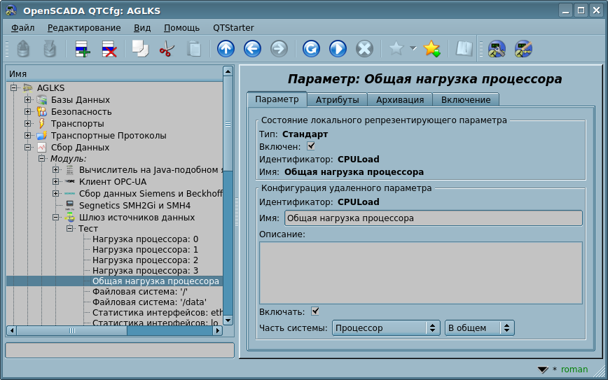

|
|
The translation checking and actualizing
|
| Модуль |
Имя |
Версия |
Лицензия |
Источник |
Языки |
Платформы |
Тип |
Автор |
Описание
|
| DAQGate |
Шлюз источников данных |
1.7 |
GPL2 |
daq_DAQGate.so |
en,uk,ru,de |
x86,x86_64,ARM
|
DAQ |
Роман Савоченко |
Позволяет выполнять шлюзование источников данных удалённых OpenSCADA станций в локальные.
|
Основной функцией данного модуля является отражение данных подсистемы "Сбор данных" удалённых OpenSCADA станций на локальные. В своей работе модуль использует собственный протокол системы OpenSCADA (SelfSystem) и сервисные функции подсистемы "Сбор данных".
Модулем реализуются следующие функции:
- Отражение структуры параметров подсистемы "Сбор данных" удалённой станции. Структура при работе может периодически синхронизироваться.
- Доступ к конфигурации параметров. Конфигурация параметров контроллеров удалённых станций прозрачно отражается, что позволяет менять их удалённо.
- Доступ к текущим значениям атрибутов параметров и возможность их модификации. Значения атрибутов параметров обновляются с периодичностью исполнения локального контроллера. Запросы на модификацию атрибутов транслируются на удалённую станцию.
- Отражение архивов значений отдельных атрибутов параметров. Реализовано отражение архивов двумя способами. Первый способ предусматривает создание локального архива для атрибута и его синхронизацию с удалённым, при этом поддерживается восстановление архива на время остановки станции. Второй способ предусматривает трансляцию запросов локального архива к архиву удалённой станции.
- Отражение сообщений выбранных источников данных удалённой станции в локальном архиве сообщений с префиксом "{Станция}:", включая и нарушения (сообщения с отрицательным уровнем).
- Предоставление реализации механизма вертикального резервирования, а именно возможность отражения данных с нескольких станций одного уровня.
- Реализация функции горизонтального резервирования, а именно совместной работы с удалённой станцией этого же уровня.
Использование доступных схем резервирования наглядно представлено на рис.1.
 Рис.1. Горизонтальное и вертикальное резервирование.
1 Контроллер данных
Для добавления источника данных создаётся и настраивается объект контроллера в системе OpenSCADA. Пример вкладки конфигурации контроллера данного типа изображен на рис.2.
 Рис.2. Вкладка конфигурации контроллера.
С помощью этой вкладки можно установить:
- Состояние контроллера, а именно: Статус: "Включен", Запущен" и имя БД, содержащей конфигурацию.
- Идентификатор, имя и описание контроллера.
- Состояние, в которое переводить контроллер при загрузке: "Включен" и "Запущен".
- Таблица для хранения кеша параметров, которые создаются даже при отсутствии источника данных.
- Политика планирования и приоритет задачи сбора данных.
- Интервал времени повторения попытки восстановления связи с потерянной станцией в секундах.
- Максимальная глубина данных архива значений и сообщений для восстановления при запуске, в часах. Ноль для отключения доступа к архивам.
- Уровень запрашиваемых сообщений источников данных.
- Период синхронизации с удалённой станцией в секундах. Ноль для отключения периодической синхронизации.
- Список отражаемых удалённых станций. Несколько станций в списке включают механизм вертикального резервирования.
- Список отражаемых контроллеров и параметров. В списке можно указывать как только контроллеры, для отражения всех их параметров, так и отдельно взятые параметры.
- Команда перехода к конфигурации перечня удалённых станций.
- Осуществлять автоматическое удаление параметров и атрибутов для актуализации к текущему состоянию. В производственном режиме лучше эту опцию отключать!
2 Параметры
Модуль хотя и предоставляет возможность создания параметров вручную, однако это лишено смысла поскольку такой параметр, при отсутствии его на сервере, будет пустым. Все параметры создаются автоматически с учётом списка отражаемых контроллеров и параметров. Параметры могут быть сохранёны в кеш для последующего их создания даже при отсутствии связи с сервером. Пример отраженного параметра приведён на рис. 3.
 Рис.3. Вкладка конфигурации отражённого параметра.
{kind=link}
{kind=link}
{kind=link}
{kind=link}